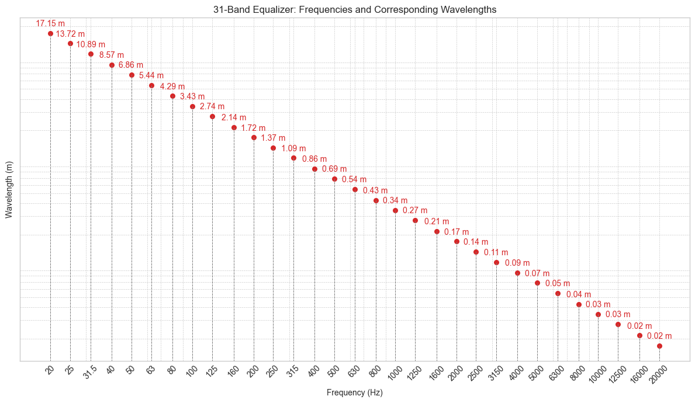

Hertz#
import numpy as np
import matplotlib.pyplot as plt
import ipywidgets as widgets
from IPython.display import display
plt.style.use('seaborn-v0_8-whitegrid')
np.random.seed(42)
# Constants
SPEED_OF_SOUND = 343 # Speed of sound in air (m/s)
# Plot 31-Band Equalizer Frequencies and Wavelengths
def plot_31_band_equalizer():
"""Plot the relationship between 31-band equalizer frequencies and their wavelengths."""
# 31-band equalizer center frequencies (in Hz)
frequencies = [20, 25, 31.5, 40, 50, 63, 80, 100, 125, 160, 200, 250, 315, 400, 500, 630, 800, 1000, 1250, 1600, 2000, 2500, 3150, 4000, 5000, 6300, 8000, 10000, 12500, 16000, 20000]
wavelengths = [SPEED_OF_SOUND / f for f in frequencies]
# Create a timeline-style plot
fig, ax = plt.subplots(figsize=(12, 7))
for i, (freq, wavelength) in enumerate(zip(frequencies, wavelengths)):
ax.plot([freq, freq], [0, wavelength], color="gray", linewidth=0.7, linestyle="--")
ax.scatter(freq, wavelength, color="tab:red", s=30, label=f"{freq} Hz" if i == 0 else "")
ax.text(freq, wavelength * 1.12, f"{wavelength:.2f} m", ha="center", va="bottom", fontsize=10, color="tab:red")
ax.set_xscale("log")
ax.set_yscale("log")
ax.set_xlabel("Frequency (Hz)")
ax.set_ylabel("Wavelength (m)")
ax.set_title("31-Band Equalizer: Frequencies and Corresponding Wavelengths")
ax.grid(True, which="both", linestyle="--", linewidth=0.5)
# Customize ticks for better readability
ax.set_xticks(frequencies)
ax.set_xticklabels([str(int(f)) if f.is_integer() else str(f) for f in frequencies], rotation=45)
ax.set_yticks([])
# ax.set_yticklabels([f"{w:.2f}" for w in wavelengths])
plt.tight_layout()
plt.show()
plot_31_band_equalizer()

import ipywidgets as widgets
# Constants
SPEED_OF_SOUND = 343 # Speed of sound in air (m/s)
# Conversion Functions
def wavelength_to_hz(wavelength):
"""
Convert wavelength (in meters) to frequency (in Hertz).
Args:
- wavelength (float): Wavelength in meters.
Returns:
- float: Frequency in Hertz.
"""
return SPEED_OF_SOUND / wavelength if wavelength > 0 else None
def hz_to_wavelength(frequency):
"""
Convert frequency (in Hertz) to wavelength (in meters).
Args:
- frequency (float): Frequency in Hertz.
Returns:
- float: Wavelength in meters.
"""
return SPEED_OF_SOUND / frequency if frequency > 0 else None
# Create interactive widgets
wavelength_input = widgets.FloatText(value=1.0, description="Wavelength (m):")
frequency_output = widgets.FloatText(value=wavelength_to_hz(1.0), description="Frequency (Hz):")
frequency_input = widgets.FloatText(value=343, description="Frequency (Hz):")
wavelength_output = widgets.FloatText(value=hz_to_wavelength(343), description="Wavelength (m):")
# Define interactivity
def on_wavelength_change(change):
wavelength = change["new"]
if wavelength > 0:
frequency_output.value = wavelength_to_hz(wavelength)
else:
frequency_output.value = None
def on_frequency_change(change):
frequency = change["new"]
if frequency > 0:
wavelength_output.value = hz_to_wavelength(frequency)
else:
wavelength_output.value = None
# Observe changes
wavelength_input.observe(on_wavelength_change, names="value")
frequency_input.observe(on_frequency_change, names="value")
# Display widgets
widgets.VBox([widgets.Label("Wavelength to Frequency Conversion:"), wavelength_input, frequency_output])
widgets.VBox([widgets.Label("Frequency to Wavelength Conversion:"), frequency_input, wavelength_output])